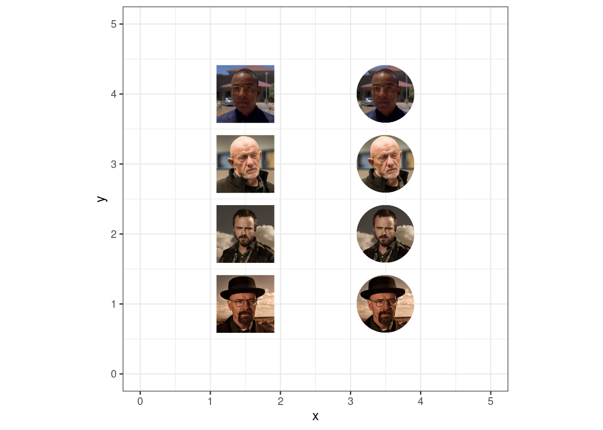

![]()
1 1. Text size & resolution
Hace poco retome el blog y tuve que trastear un poco para presentar unos plots más o menos decentes, asi que cuando de casualidad he visto este post me he dicho que tenía que volver a leerlo, y aquí estoy.
Recuerda los consejos de Hadley
Recuerda tb como ajustaste el tamaño en el tercer post sobre censos históricos (con div’s)
Ideas
A screen is basically a matrix of pixels1
Mi pantalla tiene una resolución de 1920 (ancho) x 1080 (alto) pixeles; 96 pixels per inch. Puedes obtenre estos datos con
xdpyinfo | grep -B 2 resolutionUna imagen (guardada en disco) es una matriz de puntos
ggplot and ggsave works in physical dimension (in, cm, or mm). To go from the dimension in inches to a number of dots, ggsave uses the number of dots per inches (dpi).
So if we create a plot in ggplot and save it with a dimension of 12 x 10 with the default dpi of 300 for ggsave, the file will be a matrix of (12 * 300) x (10 * 300) = 3600 x 3000 dots.
Now if you open that file on your computer, each dots represent a pixel, which means that the image has a resolution of 3600 x 3000 px.
The relation is : (size in inches) = (screen size in pixel) / PPI or (screen size in pixel) = DPI * (size in inches)
Then open a new graphic device with x11() (or quartz(), or windows() depending on your system) with a dimension of 1920 x 1200.
2 2. Palettes
- Toot de Andrew Heiss aquí
3 3. Geoms
geom_image()
Código
library(cropcircles)
library(dplyr)
library(ggimage)
# breaking bad images
x <- c(1, 3, 9, 8)
images <- glue::glue("https://openpsychometrics.org/tests/characters/test-resources/pics/BB/{x}.jpg")
df <- tibble(y = 1:4, images = images) |>
mutate(images_circle = circle_crop(images))
df |>
ggplot() +
geom_image(aes(1.5, y, image = images), size = 0.15) +
geom_image(aes(3.5, y, image = images_circle), size = 0.15) +
xlim(0, 5) +
ylim(0, 5) +
coord_fixed()
4 4. Trucos
Fuentes
Guardar gráficos
Notas
Un pixel es the smallest element that can be displayed↩︎